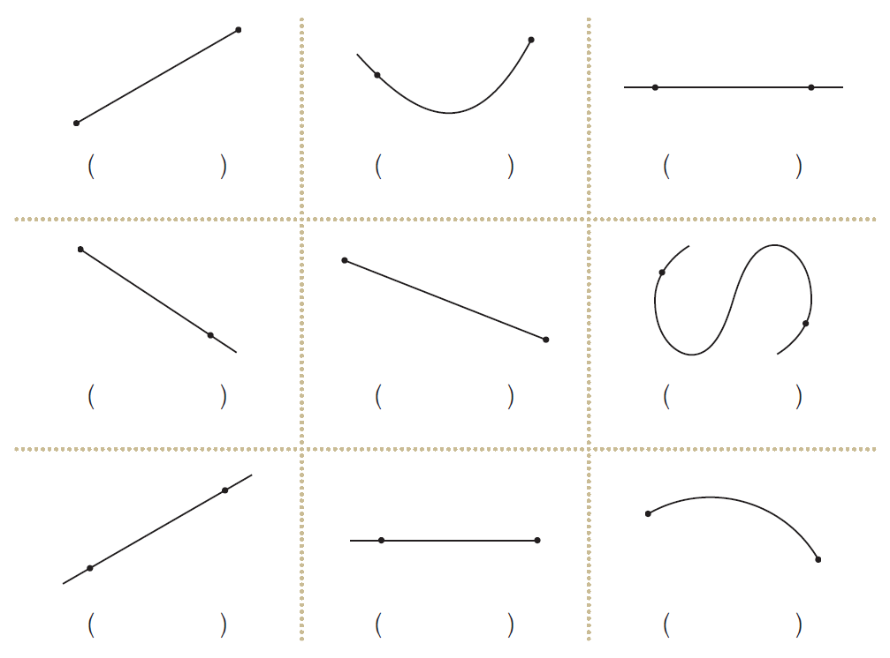

- 개념 정리
- 1
- 2
- 3
- 4
-
-
-
: 두 점을 이은 곧은 선선분
-
ㄱ
ㄴ
-
또는선분 ㄱㄴ선분 ㄴㄱ
-
-
-
: 한 점에서 시작하여 한쪽으로 끝없이 늘인 곧은 선반직선
-
ㄱ
ㄴ
ㄱ
ㄴ
-
,반직선 ㄱㄴ반직선 ㄴㄱ
-
-
-
: 선분을 양쪽으로 끝없이 늘인 곧은 선직선
-
ㄱ
ㄴ
-
또는직선 ㄱㄴ직선 ㄴㄱ
-
-
-
1 다음 도형을 보고 선분, 반직선, 직선을 찾아 무엇인지 써 보세요.
선분직선반직선선분직선반직선 -
2 도형을 기호로 나타내 보세요.
ㄱ
ㄴ
ㄷ
ㄹ
ㅁ
ㅂ
직선 ㄱㄴ
또는
직선 ㄴㄱ반직선 ㄹㄷ선분 ㅁㅂ
또는
선분 ㅂㅁ -
3 선분, 반직선, 직선을 그어 보세요.
드래그하여 그어 보세요. -
4 태양이가 바르게 이야기하도록 에서 찾아 써 보세요.
두 점을 이은 굽은 선
두 점을 이은 곧은 선
반직선은 한 점에서
시작하여 한쪽으로 끝없이
늘인 곧은 선이야.선분은
두 점을 이은 곧은 선
이야.샛별태양